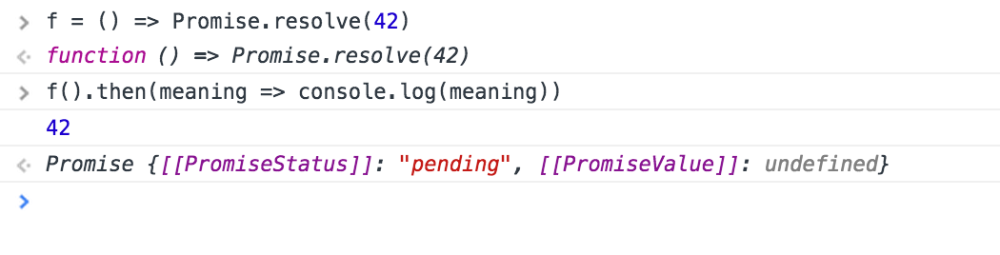

Because of…
XMLHttpRequest
var xhr = new XMLHttpRequest();
xhr.open('GET', url);
xhr.responseType = 'json';
xhr.onload = function() {
console.log(xhr.response);
};
xhr.onerror = function() {
console.log("Booo");
};
xhr.send();
Get rid of jQuery dependency
As all new async APIs proposals, fetch is based upon promises and can benefit from the inertia with that other APIs and new features.
Example: fetch + generators, fetch + async functions, fetch in Service Worker, and more coming…
GET
fetch(url)
.then(res => res.json(), err => {throw(err)})
.then(data => handleData(data))
.catch(err => handleError(err));
POST
fetch(url, {method: post, headers: ${headers}, body: ${body}})
.then(res => res.json(), err => throw(err))
.then(data => handleData(data))
.catch(err => handleError(err));
Don’t forget to check response status
fetch(url)
.then(
res => {
if (res.status === 200) {
return res.json()
}
throw(res.statusText);
}, err => {throw(err)})
.then(data => handleData(data))
.catch(err => handleError(err));
A fetch return a response.
A response type can be one of the following: basic, cors, and opaque. Also could be default or error, but these types are of a different kind.
We can access response metadata.
response.status;
response.statusText;
response.type;
response.url;
Also we can get or set headers.
response.headers.get('Content-Type');
response.headers.get('Date')
fetch(url, {
method: 'post',
headers: {
"Content-type": "application/x-www-form-urlencoded; charset=UTF-8"
},
body: 'foo=bar&lorem=ipsum'
})
// …
response.body is a ReadableStream.
Streams are nice because they allow us to handle the response data as its arrive (think on media types like video, or large datasets).
fetch streams support isn’t complete yet.
But we can read response.body stream with a set of built-in readers.
// One reader for each `response.body` type.
// All of them return a promise.
response.arrayBuffer();
response.blob();
response.formData();
response.json();
response.text();
.cancel and .finallyfetch API is still a work in progress.
An update that is coming is the inclusion of a promise’s subclass called tasks.
Subclassing allows an evolving promise API,
with backwards compatibility.
A task is a cancelable promise,
and we can cancel it with .cancel
So a task has a new state added to fullfiled, pending or rejected. It’s canceled.
A promise's then always returns a new promise.

But with tasks with can handle that final promise with .finally
More coming into fetch…
fetch API by David Walsh.fetch polyfill.Thanks!